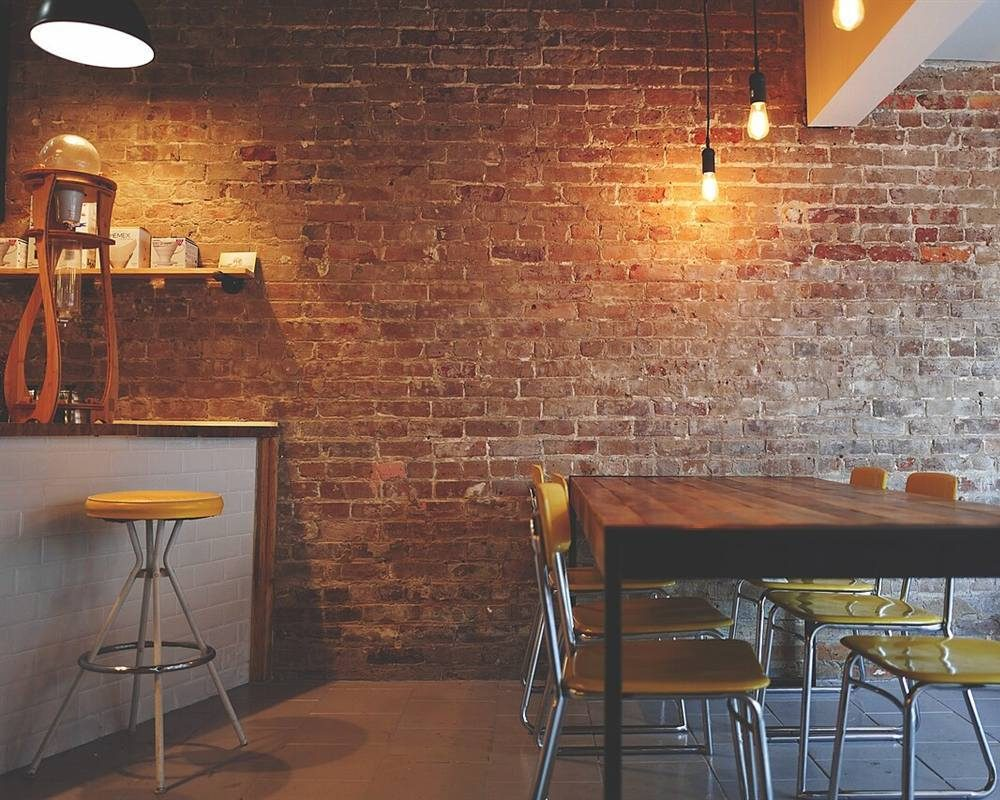

店のこと
確認できたことだけを、短く
このサイトの内容は、お店からお聞きしたものではありません。所在地とInstagramのほかは「準備中」と表示しています。
この図について
制作側の連想です
ページ全体のモチーフは、モンキーレンチの部位の配置図。固定あご・可動あご・ウォーム・ヘッド・柄・目盛りの六つに番号をつけ、各ページのつながりを道具の部位になぞらえました。制作側の連想で、お店の理念・由来とは無関係です。
- 1固定あご柄と一体になっている、動かない側のあご。
- 2可動あごねじの回転で前後にスライドする側のあご。
- 3ウォーム可動あごの歯とかみ合う、ねじ状の調整部。
- 4ヘッド二つのあごとウォームを収めた、先端の本体。
- 5柄手で握って力をかける、長い棒状の部分。
- 6目盛りあごの開き幅を読むために刻まれた線。
写真(イメージ)
パンとコーヒーの写真帯



写真はフリー素材のイメージです。お店の店内や商品を写したものではありません。
確認できたこと
所在地とInstagram
| 所在地 | 〒491-0917 愛知県一宮市昭和1丁目2-16 |
|---|---|
| 電話 | 準備中 |
| 営業時間 | 準備中 |
| 定休日 | 準備中 |
| ご予約 | 準備中 |
| 駐車場 | 準備中 |
| SNS | Instagram @_bakery_kiki |